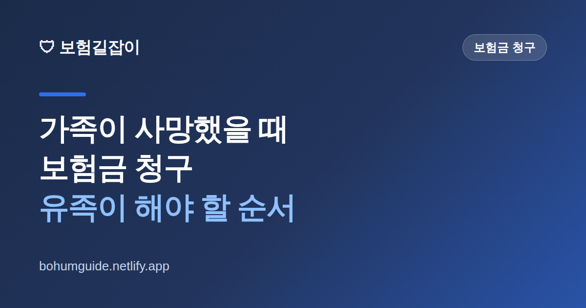

가족이 사망했을 때 보험금 청구, 유족이 해야 할 순서 총정리
가족을 떠나보낸 직후에는 무엇부터 해야 할지 판단하기 어렵습니다. 보험금 청구는 급하게 서두를 일은 아니지만, 고인이 어떤 보험을 갖고 있었는지조차 모른 채 시간이 흘러 청구를 놓치는 경우가 실제로 많습니다. 유족 입장에서 순서대로 정리했습니다.

✍️ 편집자 참고: 본 글은 초안입니다. 청구 서류·기한·상속 관련 절차는 보험사와 개별 사안에 따라 다르고 제도 개정으로 바뀌니, 게시 전 금융감독원·협회 최신 안내로 검수해 주세요.
사별 직후에는 장례와 행정 절차만으로도 벅찹니다. 그래서 보험금은 뒤로 미루기 쉬운데, 문제는 고인이 가입한 보험을 유족이 전부 알고 있는 경우가 드물다는 점입니다. 오래전 가입해 잊힌 계약, 회사에서 들어준 단체보험, 신용카드나 대출에 딸린 보험까지 있을 수 있습니다. 순서만 알아 두면 놓치는 일을 크게 줄일 수 있습니다.
1단계: 고인이 어떤 보험을 갖고 있었는지 찾기
가장 먼저 할 일은 계약의 존재를 확인하는 것입니다. 유족은 일정 요건을 갖추면 고인 명의의 보험 가입 내역을 조회할 수 있는 통합 서비스를 이용할 수 있습니다. 금융감독원의 파인(금융소비자 정보포털)이나 보험협회에서 운영하는 조회 서비스가 대표적입니다. 상속인 조회 관련 행정 서비스와 함께 활용하면 흩어진 계약을 한 번에 파악하는 데 도움이 됩니다.
이때 함께 확인하면 좋은 것이 고인이 이미 받았어야 했는데 청구하지 않은 보험금입니다. 사망과 무관하게 생전의 입원·수술·진단에 대해 청구하지 않은 건이 남아 있을 수 있습니다. 조회 방법은 숨은 보험금 찾는 법에서 자세히 다룹니다. 집 안의 보험증권, 통장 자동이체 내역, 휴대전화 문자·이메일의 보험사 안내도 함께 살펴보세요.
2단계: 누가 청구할 수 있는지 — 수익자 확인
보험금은 아무 유족이나 받는 것이 아니라 계약에 정해진 사람(수익자)이 받습니다. 그래서 증권이나 조회 결과에서 사망보험금 수익자가 누구로 지정돼 있는지부터 확인해야 합니다. 계약자·피보험자·수익자의 관계가 헷갈린다면 보험 계약자·피보험자·수익자 차이를 먼저 보면 이해가 빠릅니다.
| 지정 상태 | 일반적으로 청구하는 사람 | 유의점 |
|---|---|---|
| 특정인 지정(예: 배우자) | 지정된 그 사람 | 다른 유족 동의 없이도 청구 가능한 것이 일반적 |
| '법정상속인'으로 지정 | 상속인들이 각자 지분에 따라 | 상속인 전원 확인 서류가 필요할 수 있음 |
| 수익자 미지정 | 약관·법률에 따라 상속인 등 | 보험사에 확인 후 절차 안내를 받는 것이 안전 |
여기서 실무상 차이가 큽니다. 특정인이 수익자로 지정돼 있으면 절차가 비교적 단순하지만, 법정상속인으로 되어 있거나 지정이 없으면 가족관계증명서 등으로 상속인 범위를 확인하는 과정이 추가돼 서류가 늘어납니다. 상속인이 여러 명이면 각자 지분만큼 청구하게 되는 경우가 많으니, 미리 알아 두면 당황하지 않습니다.
3단계: 서류 준비와 청구
서류는 보험사와 사안(질병사·사고사 등)에 따라 다르지만, 일반적으로 다음과 같은 것들이 요구됩니다. 정확한 목록은 반드시 해당 보험사에 확인하세요.
- 사망을 증명하는 서류(사망진단서 등) — 사망 원인이 기재된 원본·사본 요건 확인
- 고인과 청구인의 관계를 증명하는 서류(가족관계증명서 등)
- 청구인의 신분증·통장 사본
- 보험사 청구서 및 필요 시 상속인 관련 추가 서류
사고사인 경우 사고를 확인할 수 있는 자료가 추가로 필요할 수 있습니다. 서류를 한 번에 갖추기 어렵다면, 먼저 보험사에 사망 사실을 알리고 접수해 두고 부족한 서류를 보완하는 방식도 가능한지 문의해 보세요. 청구 절차 전반은 청구 절차 총정리에서도 확인할 수 있습니다.
기한을 놓치지 마세요
보험금 청구권에는 소멸시효가 있습니다. 사별 후 경황이 없어 몇 년이 지나 버리면 청구가 어려워질 수 있으니, 장례 등 급한 일이 정리되면 계약 확인과 접수만이라도 먼저 해 두는 것이 안전합니다. 자세한 내용은 보험금 청구권 소멸시효를 참고하세요.
실전 체크 & 요약
정리하면 순서는 이렇습니다. 첫째, 파인·협회 조회 서비스로 고인 명의의 보험 계약을 전부 찾습니다. 둘째, 각 계약의 사망보험금 수익자가 누구인지 확인해 청구 주체를 정합니다. 셋째, 보험사별로 필요 서류를 확인해 청구합니다. 넷째, 소멸시효가 지나기 전에 접수를 마칩니다. 마지막으로, 받은 보험금에 세금 문제가 생길 수 있으니 보험금에도 세금이 붙을까도 함께 확인하면 좋습니다.
- 유족이 모르는 계약이 있을 수 있다 — 통합 조회부터 시작
- 생전 미청구 보험금도 함께 확인
- 청구 주체는 수익자 지정 상태에 따라 달라짐
- 상속인 청구는 서류가 더 필요할 수 있음을 감안
- 소멸시효 전에 접수, 이후 세금까지 점검
참고할 수 있는 공신력 있는 자료
- 파인(금융소비자 정보포털) — 상속인 금융거래·보험 가입 내역 조회
- 금융감독원 — 보험금 청구·분쟁 관련 소비자 안내
- 생명보험협회 — 생명보험 계약 조회·공시 정보
본 정보는 일반적인 안내이며, 청구 서류·기한과 상속 관련 절차는 각 보험사 약관과 금융감독원 등 관계기관을 통해 반드시 확인하시기 바랍니다.